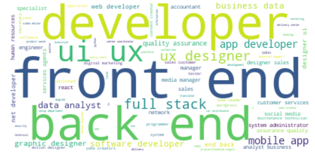

Job Posts Analysis
Analyzing job posts scraped from a public Telegram channel, using Python, ChatGPT, PaddleOCR and other techniques. This project aims to get a better understanding of the job market and extract valuable insights to help job seekers and hiring managers in their job search and hiring process.
GitHub repo